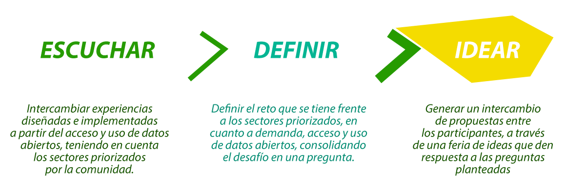

-
Abrelatam Colombia 2016
El objetivo de Abrelatam Colombia 2016 es promover la demanda, acceso y uso a datos abiertos, como activos públicos, con calidad, oportunidad e innovación, para la generación de valor social y económico, y para que los Estados en todos sus niveles y los ciudadanos, tengan mayor y mejor información para la toma de decisiones y la participación.
Abrelatam Colombia se realizará el miércoles 2 y el jueves 3 de noviembre de 2016.
El evento está dirigido a Organizaciones de la sociedad civil que promuevan la publicación y el uso de Datos Abiertos; desarrolladores de software; estadísticos; periodistas; investigadores que estudian y monitorean iniciativas en el tema; ciudadanos; niños, niñas y adolescentes; expertos o principiantes interesados en el tema a nivel nacional y subnacional de América Latina y el Caribe.
En 2016 la desconferencia servirá para discutir ideas y estrategias relacionadas con la demanda, acceso y uso de datos abiertos, en sectores priorizados previamente a través de una consulta virtual realizada en la página link al aplicativo de URNA. La consulta estará disponible hasta el 15 de agosto, participa y cuéntanos en qué sector crees que deberíamos abordar el tema de datos abiertos.
La desconferencia será una oportunidad ideal para generar colaboración en la región, y compartir mecanismos alternativos para la coordinación de recursos y esfuerzos que permitan concretar pasos siguientes en el ecosistema de los datos abiertos, bajo la siguiente estructura:
Abrelatam Colombia 2016 es liderado por la Corporación Somos Más, el Centro de Pensamiento Independiente -CEPEI- , y la Fundación Ideas para la Paz –FIP-. Los cupos son limitados así que los invitamos a estar pendientes de la apertura de inscripciones para que se registren cuanto antes y participen en el evento de datos abiertos más importante de Latinoamérica y el Caribe.
-
¿Qué es ABRELATAM y ConDatos?
ABRELATAM y ConDatos son los eventos donde la comunidad de actores de la sociedad civil, gobierno, academia, desarrolladores, empresas e individuos que trabajan para los Datos Abiertos en América Latina se encuentran para entablar un diálogo sobre el estado e impacto de datos abiertos en la región.